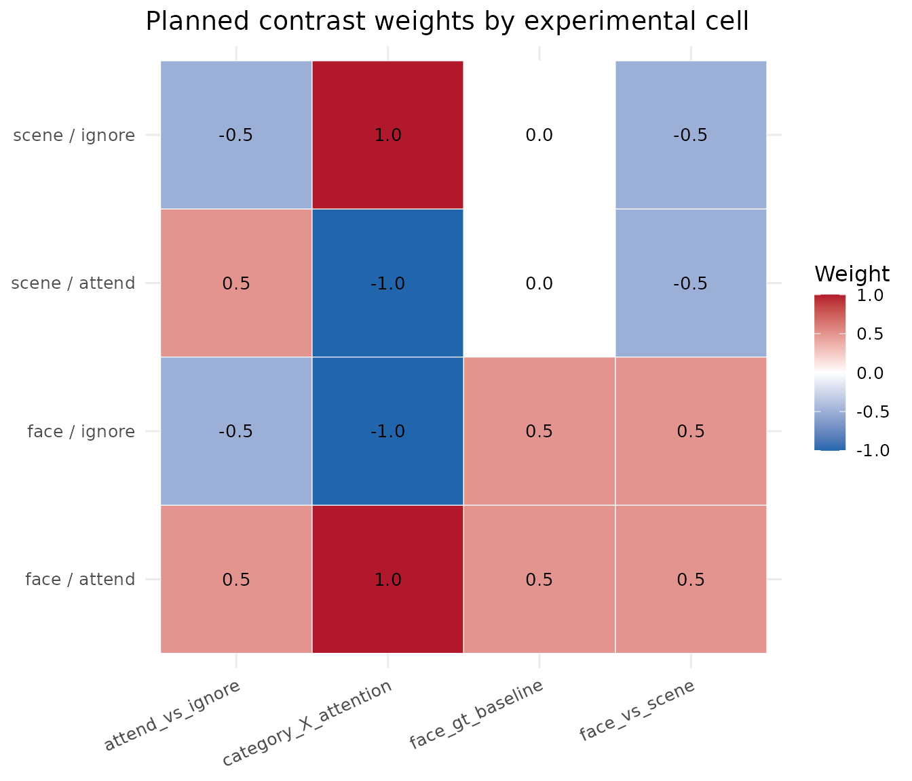

Contrasts and Hypothesis Tests
Bradley R. Buchsbaum
2026-08-22
Source:vignettes/a_05_contrasts.Rmd
a_05_contrasts.RmdIntroduction to Contrasts
Statistical contrasts turn questions about differences between
experimental conditions into linear hypotheses about fitted
coefficients. fmrireg provides constructors for defining
those hypotheses, inspecting their weights, and fitting them with an
fMRI linear model.
This vignette shows how to turn a scientific question into weights,
inspect those weights before fitting, and extract the resulting
estimates and test statistics. If you have not yet fitted a model, start
with
vignette("a_09_linear_model", package = "fmrireg").
Example: A 2x2 Factorial Design
To illustrate the contrast functionalities, let’s use a simple two-by-two factorial design. We have two factors:
- category: with levels “face” and “scene”
- attention: with levels “attend” and “ignore”
We’ll assume each unique condition is repeated twice within a single run.
First, we construct the event table representing this design:
design <- expand.grid(category = c("face", "scene"),
attention = c("attend", "ignore"),
replication = c(1, 2))
design$onset <- seq(1, 100, length.out = nrow(design)) # Assign arbitrary onsets
design$block <- rep(1, nrow(design)) # Single block (run)
# Ensure factors are factors
design$category <- factor(design$category)
design$attention <- factor(design$attention)
kable(design, caption = "2x2 Experimental Design Table")| category | attention | replication | onset | block |
|---|---|---|---|---|
| face | attend | 1 | 1.00000 | 1 |
| scene | attend | 1 | 15.14286 | 1 |
| face | ignore | 1 | 29.28571 | 1 |
| scene | ignore | 1 | 43.42857 | 1 |
| face | attend | 2 | 57.57143 | 1 |
| scene | attend | 2 | 71.71429 | 1 |
| face | ignore | 2 | 85.85714 | 1 |
| scene | ignore | 2 | 100.00000 | 1 |
# Define a sampling frame and create the event model
sframe <- sampling_frame(blocklens = 120, TR = 2)
emodel <- event_model(onset ~ hrf(category, attention),
block = ~block,
data = design,
sampling_frame = sframe)
# Extract the event term for contrast calculation
# In this simple model, there's only one event term
event_term <- terms(emodel)[[1]]
cell_order <- unique(design[c("category", "attention")])
cell_labels <- paste(cell_order$category, cell_order$attention, sep = " / ")
label_weight_matrix <- function(x, labels = cell_labels) {
out <- as.matrix(x)
stopifnot(nrow(out) == length(labels))
rownames(out) <- labels
out
}
kable(cell_order,
row.names = FALSE,
caption = "Cells within the 'category:attention' event term")| category | attention |
|---|---|
| face | attend |
| scene | attend |
| face | ignore |
| scene | ignore |
This event_term object encapsulates the structure of our
experimental conditions and will be used to compute contrast
weights.
Basic Contrasts: pair_contrast
The most common type of contrast compares the average activation of
one set of conditions against another. The pair_contrast
function provides a convenient way to define such sum-to-zero
contrasts.
Defining Pair Contrasts
pair_contrast takes two formulas, A and
B, defining the conditions to compare, and a mandatory
name.
Let’s define contrasts for the main effects of category (face vs. scene) and attention (attend vs. ignore):
# Main effect of category: face > scene
con_face_vs_scene <- pair_contrast(~ category == "face",
~ category == "scene",
name = "face_vs_scene")
# Main effect of attention: attend > ignore
con_attend_vs_ignore <- pair_contrast(~ attention == "attend",
~ attention == "ignore",
name = "attend_vs_ignore")Computing Contrast Weights
Contrast specifications are abstract until applied to a specific
model term structure. The contrast_weights function
computes the numerical weights based on the levels within the term.
wts_face_vs_scene <- contrast_weights(con_face_vs_scene, event_term)
wts_attend_vs_ignore <- contrast_weights(con_attend_vs_ignore, event_term)
cat("Weights for 'face_vs_scene':\n")
#> Weights for 'face_vs_scene':
kable(label_weight_matrix(wts_face_vs_scene$weights),
col.names = wts_face_vs_scene$name)| face_vs_scene | |
|---|---|
| face / attend | 0.5 |
| scene / attend | -0.5 |
| face / ignore | 0.5 |
| scene / ignore | -0.5 |
cat("\nWeights for 'attend_vs_ignore':\n")
#>
#> Weights for 'attend_vs_ignore':
kable(label_weight_matrix(wts_attend_vs_ignore$weights),
col.names = wts_attend_vs_ignore$name)| attend_vs_ignore | |
|---|---|
| face / attend | 0.5 |
| scene / attend | 0.5 |
| face / ignore | -0.5 |
| scene / ignore | -0.5 |
Notice how pair_contrast automatically averages over the
levels not mentioned in the formulas. For
face_vs_scene, it averages over ‘attend’ and ‘ignore’
within each category level before contrasting. The resulting weights sum
to zero (0.5 * 2 + (-0.5) * 2 = 0).
Unit Contrasts: Comparing to Baseline
Sometimes, we want to test whether activation for a condition (or set
of conditions) is significantly different from the implicit baseline
(often represented by the intercept in the model).
unit_contrast is used for this purpose. It creates
contrasts that sum to 1.
con_face_vs_baseline <- unit_contrast(
~ category, name = "face_gt_baseline",
where = ~ category == "face"
)
con_attend_vs_baseline <- unit_contrast(
~ attention, name = "attend_gt_baseline",
where = ~ attention == "attend"
)
wts_face_vs_baseline <- contrast_weights(con_face_vs_baseline, event_term)
wts_attend_vs_baseline <- contrast_weights(con_attend_vs_baseline, event_term)
cat("Weights for 'face_gt_baseline':\n")
#> Weights for 'face_gt_baseline':
kable(label_weight_matrix(wts_face_vs_baseline$weights),
col.names = wts_face_vs_baseline$name)| face_gt_baseline | |
|---|---|
| face / attend | 0.5 |
| scene / attend | 0.0 |
| face / ignore | 0.5 |
| scene / ignore | 0.0 |
cat("\nWeights for 'attend_gt_baseline':\n")
#>
#> Weights for 'attend_gt_baseline':
kable(label_weight_matrix(wts_attend_vs_baseline$weights),
col.names = wts_attend_vs_baseline$name)| attend_gt_baseline | |
|---|---|
| face / attend | 0.5 |
| scene / attend | 0.5 |
| face / ignore | 0.0 |
| scene / ignore | 0.0 |
These weights average the specified conditions and compare them against zero (the implicit baseline).
General Contrasts with contrast()
The contrast() function allows for more complex
contrasts defined by a single formula expression. This is useful for
interactions or specific linear combinations of conditions.
Let’s define the interaction contrast: (face:attend - face:ignore) - (scene:attend - scene:ignore). This tests if the effect of attention differs between categories.
# Interaction contrast
con_interaction <- contrast(
~ (`face:attend` - `face:ignore`) - (`scene:attend` - `scene:ignore`),
name = "category_X_attention"
)
wts_interaction <- contrast_weights(con_interaction, event_term)
cat("Weights for 'category_X_attention':\n")
#> Weights for 'category_X_attention':
kable(label_weight_matrix(wts_interaction$weights),
col.names = wts_interaction$name)| category_X_attention | |
|---|---|
| face / attend | 1 |
| scene / attend | -1 |
| face / ignore | -1 |
| scene / ignore | 1 |
Note: In the formula for contrast(), condition names are
formed by joining factor levels with colons (e.g.,
face:attend). When condition names contain special
characters like colons, they must be enclosed in backticks. The
contrast_weights function evaluates this formula in an
environment where each condition name corresponds to a column vector (1
for that condition, 0 otherwise).
Contrasts for Main Effects and Interactions
While pair_contrast and contrast are
flexible, fmrireg provides convenience functions for
standard ANOVA-like contrasts.
-
oneway_contrast: Generates contrasts for the main effect of a single factor (sum-to-zero coding). -
interaction_contrast: Generates contrasts for interaction effects between two or more factors.
These often result in multiple contrast columns (F-contrasts) testing the overall effect.
# Main effect of category (will produce 1 contrast vector)
con_main_category <- oneway_contrast(~ category, name = "Main_Category")
wts_main_category <- contrast_weights(con_main_category, event_term)
# Interaction effect (will produce 1 contrast vector for a 2x2 design)
con_int_cat_att <- interaction_contrast(~ category * attention, name = "Interaction_CatAtt")
wts_int_cat_att <- contrast_weights(con_int_cat_att, event_term)
cat("Weights for 'Main_Category' (oneway_contrast):\n")
#> Weights for 'Main_Category' (oneway_contrast):
kable(label_weight_matrix(wts_main_category$weights))| Main_Category_1 | |
|---|---|
| face / attend | -1 |
| scene / attend | 1 |
| face / ignore | -1 |
| scene / ignore | 1 |
cat("\nWeights for 'Interaction_CatAtt' (interaction_contrast):\n")
#>
#> Weights for 'Interaction_CatAtt' (interaction_contrast):
kable(label_weight_matrix(wts_int_cat_att$weights))| Interaction_CatAtt_1 | |
|---|---|
| face / attend | 1 |
| scene / attend | -1 |
| face / ignore | -1 |
| scene / ignore | 1 |
Note that the weights generated by
interaction_contrast(~ category * attention) match those we
manually specified using contrast(). For factors with more
levels, these functions would generate multiple orthogonal contrast
columns.
Polynomial Contrasts for Ordered Factors
If a factor represents ordered levels (e.g., different task
difficulty levels, time points), poly_contrast can test for
trends (linear, quadratic, etc.).
Let’s add an ‘intensity’ factor to our design:
design_poly <- expand.grid(category = c("face", "scene"),
intensity = c(1, 2, 3), # Ordered factor
replication = c(1))
design_poly$onset <- seq(1, 60, length.out = nrow(design_poly))
design_poly$block <- rep(1, nrow(design_poly))
design_poly$intensity <- factor(design_poly$intensity, ordered = TRUE)
kable(design_poly, caption = "Design with Ordered 'intensity' Factor")| category | intensity | replication | onset | block |
|---|---|---|---|---|
| face | 1 | 1 | 1.0 | 1 |
| scene | 1 | 1 | 12.8 | 1 |
| face | 2 | 1 | 24.6 | 1 |
| scene | 2 | 1 | 36.4 | 1 |
| face | 3 | 1 | 48.2 | 1 |
| scene | 3 | 1 | 60.0 | 1 |
emodel_poly <- event_model(onset ~ hrf(category, intensity),
block = ~block,
data = design_poly,
sampling_frame = sframe)
event_term_poly <- terms(emodel_poly)[[1]]Now, define a polynomial contrast to test for linear and quadratic trends of intensity:
con_poly_intensity <- poly_contrast(~ intensity, degree = 2, name = "Intensity_Trend")
wts_poly_intensity <- contrast_weights(con_poly_intensity, event_term_poly)
poly_cell_order <- unique(design_poly[c("category", "intensity")])
poly_labels <- paste(
poly_cell_order$category,
paste("intensity", poly_cell_order$intensity),
sep = " / "
)
cat("Weights for 'Intensity_Trend' (poly_contrast, degree=2):\n")
#> Weights for 'Intensity_Trend' (poly_contrast, degree=2):
kable(label_weight_matrix(wts_poly_intensity$weights, poly_labels))| Intensity_Trend_1 | Intensity_Trend_2 | |
|---|---|---|
| face / intensity 1 | -0.5 | 0.2886751 |
| scene / intensity 1 | -0.5 | 0.2886751 |
| face / intensity 2 | 0.0 | -0.5773503 |
| scene / intensity 2 | 0.0 | -0.5773503 |
| face / intensity 3 | 0.5 | 0.2886751 |
| scene / intensity 3 | 0.5 | 0.2886751 |
The output has two columns: Intensity_Trend_1 for the
linear trend and Intensity_Trend_2 for the quadratic
trend.
Helper Functions for Common Comparisons
Two helpers simplify common multi-level comparisons:
-
pair_contrast: Creates a pairwise comparison between two levels of a factor. -
one_against_all_contrast: Compares each level against the average of all other levels.
# Pairwise contrast for category using pair_contrast
con_pairwise_cat <- pair_contrast(~ category == "face",
~ category == "scene",
name = "cat_face_scene")
# Compare each attention level vs the other
con_one_all_att <- one_against_all_contrast(levels(design$attention), facname = "attention")
# Since con_one_all_att is already a contrast_set, we need to extract its elements
# and combine them properly with the single contrast
all_helper_contrasts <- list(con_pairwise_cat)
all_helper_contrasts <- append(all_helper_contrasts, con_one_all_att)
con_set_helpers <- do.call(contrast_set, all_helper_contrasts)
# Calculate weights (demonstrating contrast_set)
wts_helpers <- contrast_weights(con_set_helpers, event_term)
# Display weights for one_against_all
cat("Weights for 'con_attend_vs_other':\n")
#> Weights for 'con_attend_vs_other':
kable(label_weight_matrix(wts_helpers$con_attend_vs_other$weights))| con_attend_vs_other | |
|---|---|
| face / attend | 0.5 |
| scene / attend | 0.5 |
| face / ignore | -0.5 |
| scene / ignore | -0.5 |
cat("\nWeights for 'con_ignore_vs_other':\n")
#>
#> Weights for 'con_ignore_vs_other':
kable(label_weight_matrix(wts_helpers$con_ignore_vs_other$weights))| con_ignore_vs_other | |
|---|---|
| face / attend | -0.5 |
| scene / attend | -0.5 |
| face / ignore | 0.5 |
| scene / ignore | 0.5 |
Grouping Contrasts: contrast_set
You can group multiple contrast specifications using
contrast_set. When contrast_weights is called
on a contrast_set, it returns a named list of computed
contrast weight objects.
# Combine several previously defined contrasts
all_contrasts <- contrast_set(
con_face_vs_scene,
con_attend_vs_ignore,
con_interaction,
con_face_vs_baseline
)
print(all_contrasts)
#>
#> === Contrast Set ===
#>
#> Overview:
#> * Number of contrasts: 4
#> * Types of contrasts:
#> - contrast_formula_spec : 1
#> - pair_contrast_spec : 2
#> - unit_contrast_spec : 1
#>
#> Individual Contrasts:
#>
#> [1] face_vs_scene (pair_contrast_spec)
#> Formula: ~category == "face" vs ~category == "scene"
#>
#> [2] attend_vs_ignore (pair_contrast_spec)
#> Formula: ~attention == "attend" vs ~attention == "ignore"
#>
#> [3] category_X_attention (contrast_formula_spec)
#> Formula: ~(`face:attend` - `face:ignore`) - (`scene:attend` - `scene:ignore`)
#>
#> [4] face_gt_baseline (unit_contrast_spec)
#> Formula: ~category
#> Subset: ~category == "face"
# Compute weights for the entire set
all_weights <- contrast_weights(all_contrasts, event_term)
# Access weights for a specific contrast within the set
cat("\nAccessing weights for 'face_vs_scene' from the set:\n")
#>
#> Accessing weights for 'face_vs_scene' from the set:
kable(label_weight_matrix(all_weights$face_vs_scene$weights))| face_vs_scene | |
|---|---|
| face / attend | 0.5 |
| scene / attend | -0.5 |
| face / ignore | 0.5 |
| scene / ignore | -0.5 |
Applying Contrasts in fmri_lm
Contrasts are typically specified within the hrf()
function in the fmri_lm formula. You can provide a single
contrast specification or a contrast_set.
# Fit model with the contrast set defined earlier
fmri_fit <- fmri_lm(
onset ~ hrf(category, attention, contrasts = all_contrasts),
block = ~ block, dataset = dataset_sim
)The simulated cell effects make the face-minus-scene contrast positive in all three voxels. This gives the example a known direction rather than relying on an arbitrary noise realization.
Extracting Contrast Results
After fitting a model with contrasts, you can extract the results
using standard accessor functions, specifying
type = "contrasts" or type = "F":
-
coef(fmri_fit, type = "contrasts"): Estimated contrast values. -
stats(fmri_fit, type = "contrasts"): t-statistics for contrasts. -
standard_error(fmri_fit, type = "contrasts"): Standard errors for contrasts. -
stats(fmri_fit, type = "F"): F-statistics (if F-contrasts were defined, e.g., viaoneway_contrast).
contrast_estimates <- coef(fmri_fit, type = "contrasts")
contrast_tstats <- stats(fmri_fit, type = "contrasts")
contrast_se <- standard_error(fmri_fit, type = "contrasts")
contrast_p <- p_values(fmri_fit, type = "contrasts")
contrast_summary_numeric <- data.frame(
contrast = names(contrast_estimates),
estimate = as.numeric(contrast_estimates[1, ]),
std_error = as.numeric(contrast_se[1, ]),
statistic = as.numeric(contrast_tstats[1, ]),
p_value = as.numeric(contrast_p[1, ]),
df = as.numeric(fmri_fit$result$df$inference)[1]
)
contrast_summary <- transform(
contrast_summary_numeric,
p_value = format.pval(p_value, digits = 3, eps = 1e-4)
)
kable(contrast_summary, digits = 3,
row.names = FALSE,
caption = "Contrast results for voxel 1")| contrast | estimate | std_error | statistic | p_value | df |
|---|---|---|---|---|---|
| face_vs_scene | 0.675 | 0.040 | 16.767 | <1e-04 | 112 |
| attend_vs_ignore | 0.345 | 0.042 | 8.224 | <1e-04 | 112 |
| category_X_attention | 0.352 | 0.080 | 4.386 | <1e-04 | 112 |
| face_gt_baseline | 1.015 | 0.036 | 28.396 | <1e-04 | 112 |
The estimate is the effect size in response-data units. The standard error is its uncertainty, and the t statistic is their ratio; the p-value additionally depends on the reported inference degrees of freedom. These p-values describe planned tests at one voxel. A whole-brain analysis must also declare how it controls multiplicity across voxels and across any unplanned contrasts.
Execute an omnibus F-contrast
A multi-column F-contrast asks whether any of several restrictions is nonzero. Here a three-level factor gives a two-degree-of-freedom omnibus test. This is different from choosing one signed pairwise difference.
three_level_events <- data.frame(
onset = seq(5, 80, length.out = 12),
condition = factor(rep(c("faces", "objects", "scenes"), 4)),
run = 1L
)
three_level_frame <- sampling_frame(100, TR = 2)
three_level_event <- event_model(
onset ~ hrf(condition), block = ~ run,
data = three_level_events, sampling_frame = three_level_frame
)
three_level_X <- as.matrix(design_matrix(three_level_event))
set.seed(404)
three_level_Y <- three_level_X %*% matrix(c(1.0, 0.4, -0.2), ncol = 1) +
matrix(rnorm(100, sd = 0.15), ncol = 1)
three_level_dataset <- matrix_dataset(
three_level_Y, TR = 2, run_length = 100,
event_table = three_level_events
)
condition_omnibus <- oneway_contrast(~ condition, name = "condition_F")
omnibus_fit <- fmri_lm(
onset ~ hrf(condition, contrasts = contrast_set(condition_omnibus)),
block = ~ run, dataset = three_level_dataset
)
omnibus_weights <- contrast_weights(
condition_omnibus, terms(three_level_event)[[1]]
)$weights
omnibus_F <- as.numeric(stats(omnibus_fit, type = "F")$condition_F)
omnibus_df1 <- ncol(omnibus_weights)
omnibus_df2 <- as.numeric(omnibus_fit$result$df$inference)[1]
omnibus_p <- pf(omnibus_F, omnibus_df1, omnibus_df2, lower.tail = FALSE)
omnibus_summary <- data.frame(
F = omnibus_F,
numerator_df = omnibus_df1,
denominator_df = omnibus_df2,
p_value = format.pval(omnibus_p, digits = 3, eps = 1e-4)
)
kable(
omnibus_summary,
digits = 3,
row.names = FALSE,
caption = "Omnibus test of equality across three condition effects"
)| F | numerator_df | denominator_df | p_value |
|---|---|---|---|
| 407.144 | 2 | 93 | <1e-04 |
Visualizing Contrast Weights
Before fitting, inspect the cell weights using labels that match the scientific conditions. This catches sign errors without exposing internal design-column names.
weight_matrix <- do.call(cbind, lapply(
all_weights,
function(weight) as.numeric(weight$weights[, 1])
))
cell_order <- unique(design[c("category", "attention")])
rownames(weight_matrix) <- paste(cell_order$category, cell_order$attention,
sep = " / ")
colnames(weight_matrix) <- names(all_weights)
weight_long <- as.data.frame(as.table(weight_matrix), stringsAsFactors = FALSE)
names(weight_long) <- c("condition", "contrast", "weight")
ggplot(weight_long, aes(contrast, condition, fill = weight)) +
geom_tile(color = "white") +
geom_text(aes(label = sprintf("%.1f", weight)), size = 3.5) +
scale_fill_gradient2(low = "#2166AC", mid = "white", high = "#B2182B") +
labs(x = NULL, y = NULL, fill = "Weight",
title = "Planned contrast weights by experimental cell") +
theme_minimal(base_size = 12) +
theme(axis.text.x = element_text(angle = 25, hjust = 1))
The full-design helperplot_contrasts() remains useful when
you also need to audit how these weights align with nuisance and
baseline columns.
Working with Contrast Weights
The computed contrast weights can be used directly in statistical analyses or exported to other analysis packages. The weights matrix shows exactly how each experimental condition contributes to the contrast:
interaction_weights <- data.frame(
condition = rownames(weight_matrix),
weight = as.numeric(wts_interaction$weights[, 1])
)
kable(interaction_weights,
row.names = FALSE,
caption = "Weights for the category-by-attention interaction")| condition | weight |
|---|---|
| face / attend | 1 |
| scene / attend | -1 |
| face / ignore | -1 |
| scene / ignore | 1 |
Conclusion
This vignette showed how to define pairwise comparisons
(pair_contrast), baseline tests
(unit_contrast), formula-based contrasts
(contrast), polynomial trends (poly_contrast),
and multi-degree-of-freedom effects (oneway_contrast,
interaction_contrast). Inspect the resulting weight matrix,
fit the declared hypothesis with fmri_lm, and report the
effect, uncertainty, degrees of freedom, and multiplicity procedure
together.
Next
-
vignette("multisubject_fanout", package = "fmrireg")— Reuse the model across subjects -
vignette("group_analysis", package = "fmrireg")— Group analysis